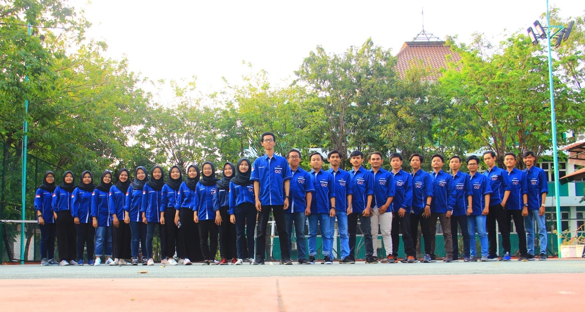

ORGANISASI
Pengalaman Organisasi
Organisasi yang saya ikuti selama kuliah yaitu bergabung dengan komunitas ISCOM (Information System Community) yang ada di jurusan Sistem Informasi UPN "Veteran" Jawa Timur. Saya bergabung dengan komunitas tersebut karena ingin menambah wawasan, mengasah kemampuan dalam hal pemrograman, serta menambah relasi. Saya bergabung dengan komunitas tersebut sejak tahun 2018. Selain pengalaman dalam hal organisasi, saya juga cukup berpengalaman dalam dunia kepanitiaan. Ada beberapa acara dan saya turut serta dalam melancarkan acara sebagai panitia :
1. Workshop ISME (IT Fest I-Technopedia and E-Technopedia) sebagai Anggota Divisi Perlengkapan dan Kosumsi.
2. Makrab Angkatan Night of FriendShip sebagai Anggota Divisi Dana dan Usaha.
3. Workshop BIDIK 4.0 (Become Digital Marketer in Youth to Face Industry 4.0) sebagai Bendahara.
4. PKKMB Pensi 2019 sebagai Ketua Divisi Kesehatan.
5. Diklat ISCOM 2019 sebagai Anggota Divisi Dana dan Usaha.